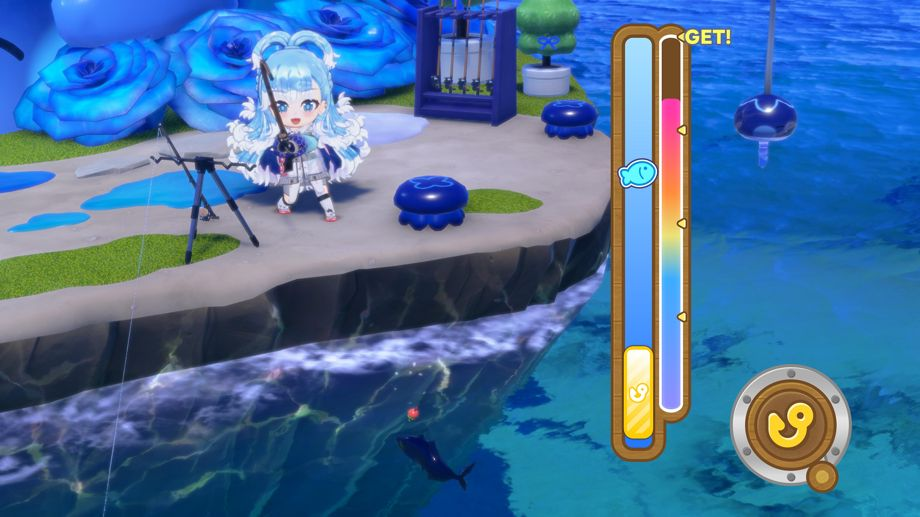
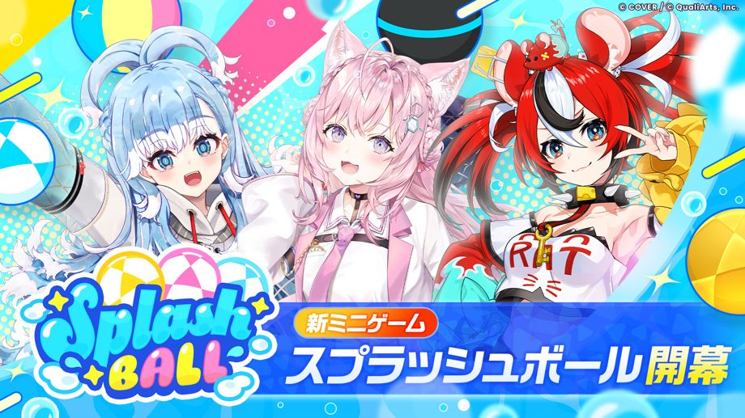

2026-09-29 11:00:00より、新エリア「ソーダポップラグーン」登場！
◆新エリア登場日
2026-09-29 11:00:00〜
◆解放条件
・メインクエスト2章12話「さわがしい時間は終わらない」をクリア
新エリア「ソーダポップラグーン」概要

ソーダポップラグーンは、広大な海と島々によって構成された新エリアです。
エリア内は「ボート」に乗って移動することができます。
ストーリーを進めることで、移動可能な海域が広がっていきます。
新機能「さかな釣り」登場！

「さかな釣り」は、エリア内の釣りスポットで、魚を釣ることができる新機能です。
釣れるさかなは、エサやスポット、時間帯ごとに変化します。
さかなを釣ると報酬を獲得でき、釣ったさかなは図鑑に記録されます。
また、釣れたさかなの種類に応じても報酬を獲得することができます。
※新機能「さかな釣り」は、メインクエスト3章「ソーダポップラグーン」を進めていくことで解放されます。
新ミニゲーム「スプラッシュボール」追加！

スプラッシュボールは、3人ずつの3チームに分かれて戦う、マルチプレイのミニゲームです。
ボートに乗り、ボールを相手チームのゴールに入れることで、相手チームから得点を獲得できます。
チームの順位や個人のスコアに応じて、報酬を獲得できます。
※新ミニゲーム「スプラッシュボール」は、メインクエスト3章「ソーダポップラグーン」を進めていくことで解放されます。
※マルチプレイのプライベートルームでは、メインクエスト1章4話「Mythical Connection」をクリアすることで遊ぶことができます。
注意事項
・開催期間および内容は予告なく変更する場合があります。